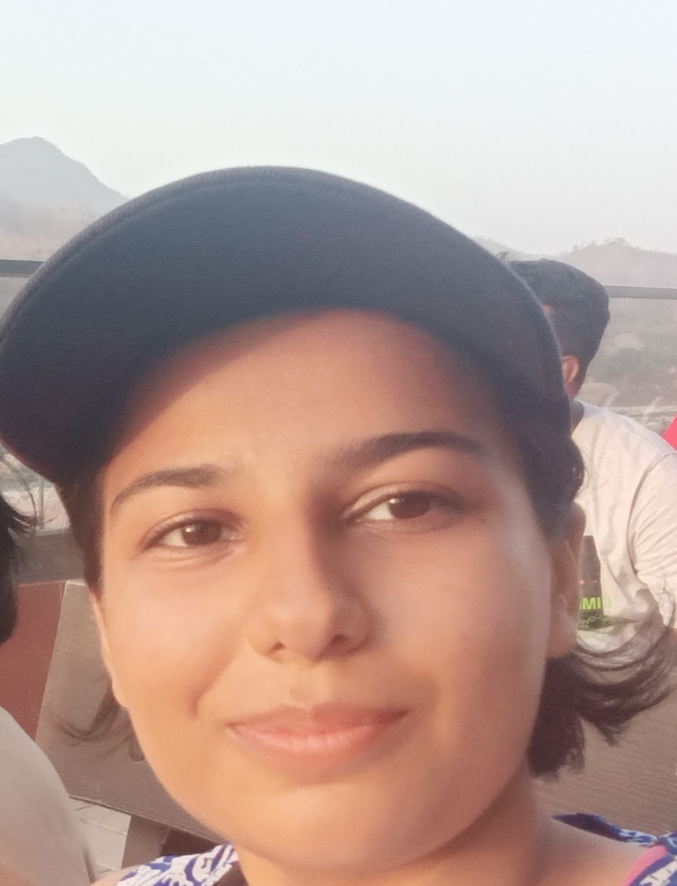
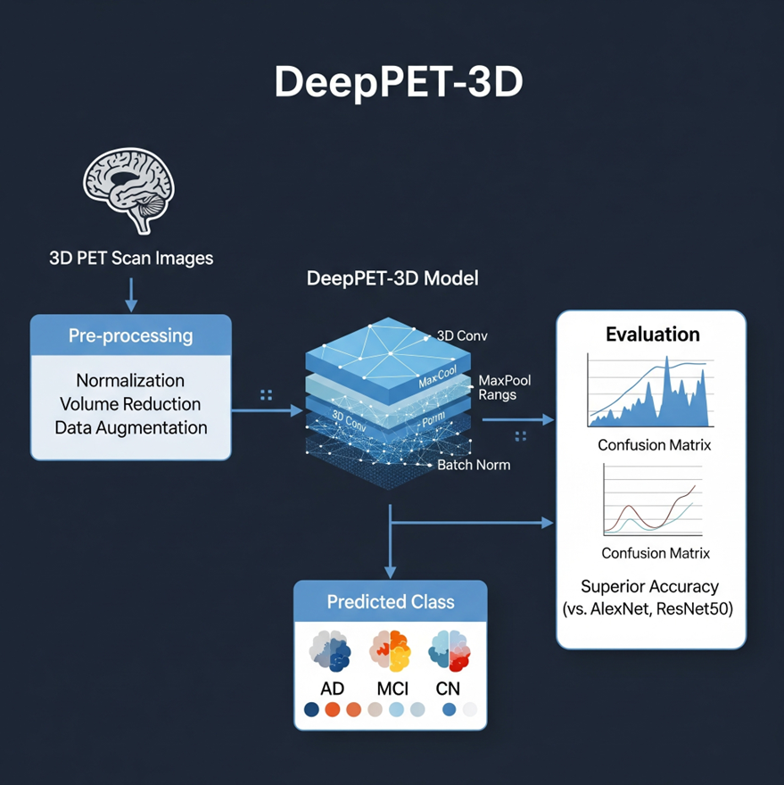
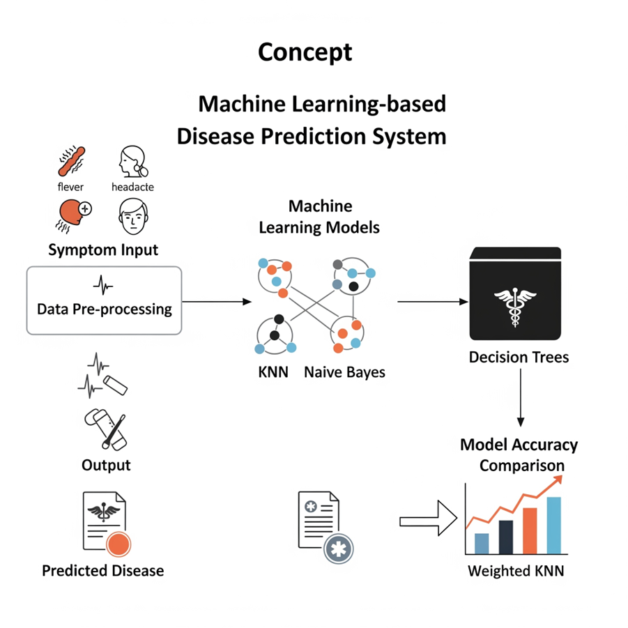
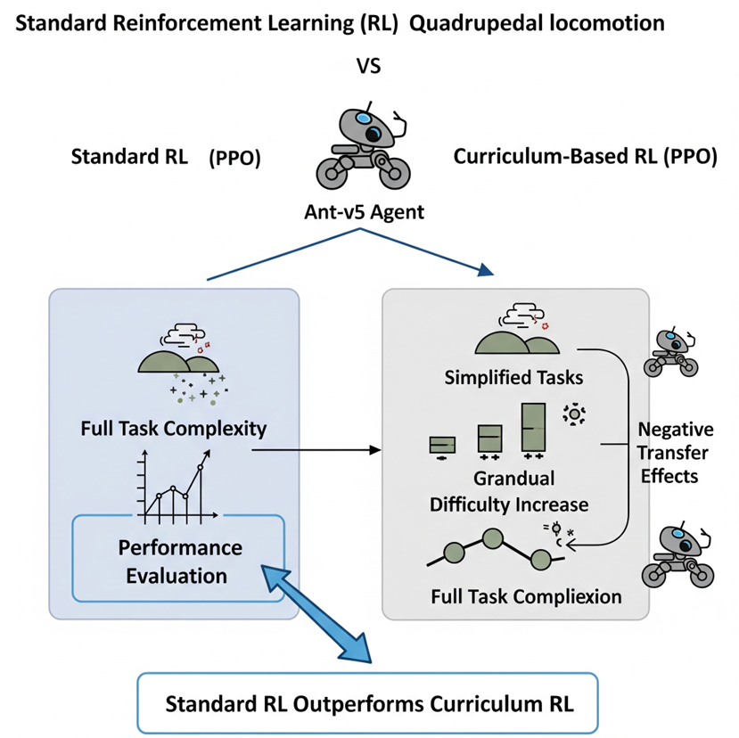
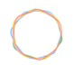
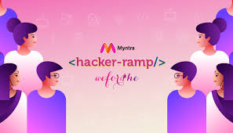

|
Aastha Kataria
I'm fascinated by wildlife and find deep joy in discovering mathematical patterns in nature. There is so much to this world, from the unexplored vastness of the universe to the deepest crevices of the ocean, from the workings of the mind to the depths of the soul. We may not know much, but the curiosity to learn and ask questions is always there, where imagination meets discovery and leads to invention.
Math is not just numbers. Feelings are not just words. Human nature is a terse language with a lot left unsaid. I want to build everything I can, things that people can actually use. Enjoying the work, staying open to suggestions, and embracing the mutations that come from collaboration: that is what life is all about.
I'm a recent graduate from K.J. Somaiya College of Engineering, Mumbai, with a B.Tech in Information Technology and Honours in AI, with a long trail of coding, building, and learning, including working with robots from scratch.
Email /
CV /
GitHub /
LinkedIn /
X
|

|
|
Research Papers
Lorenz
I work on AI for healthcare and robotics, quantum algorithms, and efficient machine learning, developing practical solutions for real-world problems.
|
 |
DeepPET-3D: A Deep Learning based 3D-CNN Model for Diagnosis of Alzheimer's Disease using 18-FDG-PET
Aastha Ketan Kataria, Ninad Mehendale · Best Speaker Award
Taylor & Francis, ICTEAH, 2025 · presented at the 2nd Int. Conf. on Technologies for Energy, Agriculture, and Healthcare, Mumbai
3D convolutional neural network for early Alzheimer's detection using PET imaging. Achieved 96.91% accuracy by analyzing complete 3D brain scans.
chapter
|
 |
Machine Learning-Based Disease Prediction System using Symptom Analysis
Aastha Ketan Kataria, Ninad Mehendale
Taylor & Francis, ICTEAH, 2025 · presented at the 2nd Int. Conf. on Technologies for Energy, Agriculture, and Healthcare, Mumbai
Weighted KNN model predicting 230+ diseases from symptoms with 93.5% accuracy. Enables scalable preliminary health screening.
chapter
|
 |
Standard vs. Curriculum-Based Proximal Policy Optimization in High-Dimensional Quadrupedal Locomotion: An Empirical Investigation of Negative Transfer Effects
Sarika Dharangaonkar, Aastha Ketan Kataria, Suyash Mundhe
Springer, ICICCT, 2025 · oral presentation at the 9th Int. Conf. on Inventive Communication and Computational Technologies
Comparative study showing standard reinforcement learning outperformed curriculum-based approaches in complex quadrupedal locomotion due to negative transfer effects.
chapter
|
Preprints, Accepted & Under Review
|
A Quantum Algorithm for Random Number Generation
Aastha Ketan Kataria, Devansh Desai, Ashwini Dalvi, Sagar Korde, Abhijeet Pasi, Irfan N A Siddavatam, Sudhir Ranjan Jain
arXiv preprint, 2026 · submitted to Quantum Science and Technology (IOP Publishing) · arXiv
|
NISARG: Design and Implementation of a Wireless Robotic System for Semi-Autonomous Gutter Waste Management
Madhavi Pawar, Aastha Ketan Kataria, Shashwat Tulsyan, Jasraj Bherwani, S. S. Bhusnoor, Ninad Mehendale
3rd International Conference on Technologies for Energy, Agriculture, and Healthcare (ICTEAH) · accepted, in publication
|
Recovering Blooms Misclassified as Cloud: A Frequency-Based Sentinel-2 Framework for Monitoring Hyper-Eutrophic Urban Lakes
Durgesh Zaware, Shashwat Tulsyan, Aastha Ketan Kataria, Sudha Gupta
International Conference on Artificial Intelligence and Networking (ICAIN), 2026 · accepted, in publication
|
When Does Federated Learning Help in Critical Care? Feature Information and Client Heterogeneity as Separable Determinants of Collaborative Benefit
Shashwat Tulsyan, Durgesh Zaware, Aastha Ketan Kataria, Vaibhav P Vasani
2nd International Conference on Artificial Intelligence and Emerging Technologies (ICAIET), 2027 · accepted, in publication
|
SLACK: RTOS-Exposed Deadline Slack for Adaptive Early-Exit TinyML on Microcontrollers
Durgesh Zaware, Shashwat Tulsyan, Aastha Ketan Kataria
International Conference on Artificial Intelligence and Networking (ICAIN), 2026 · under review
|
Effective Depth: A Scalar Correction Closes the Oversmoothing Gap in Trained GNNs
Durgesh Prakash Zaware, Shashwat Tulsyan, Aastha Ketan Kataria, Vaibhav Prakash Vasani
Under review
|
|
Hackathons
Finance
Competition-driven development projects showcasing rapid prototyping and team leadership skills.
|
ETHGlobal Mumbai
Aastha Ketan Kataria & team
ETHGlobal Mumbai, November 2026 — 2ND PLACE, ARKIV PRIZE
Won 2nd place in the Arkiv "Build on Arkiv (from scratch)" track, with a $500 USDC prize, on 7 November 2026.
|
|
|
|
SimpleSwastha: Hospital Management System
Aastha Ketan Kataria (Team Lead)
Smart India Hackathon, 2024 — WINNER
Led team to victory in national hackathon, selected from 500+ applicants to final 5 teams. Developed comprehensive hospital management application for patient care and medical record management.
|
 |
MoneyMind: Multi-Agent Financial Assistant
Aastha Ketan Kataria (Team Lead)
Google Solution Challenge, 2024
Multi-agent GenAI financial assistant powered by Google Gemini for new investor guidance. Built complete system from concept to deployment despite hardware constraints.
|
 |
Myntra WeForShe Hackathon
Aastha Ketan Kataria (Team Lead)
Myntra WeForShe Hackathon, 2024 — PRE-FINALIST
Advanced from 1000+ participants through multiple rounds to reach the Grand Finale. Demonstrated product development and pitching skills in competitive fintech environment.
|
More Hackathons & Competitions
- AI Vyom — Idea Hackathon, 2025. Banking app for Union Bank with liveness detection, service ticket generation, and user tracking.
- ISRO Bharatiya Antariksh Hackathon, 2024. Solar energy harvesting for civilian rooftops.
- Flipkart GRiD 6.0, 2024. Software Development Track.
- Searce AppSheet Hackathon. Building no-code solutions with Google AppSheet.
- MindBuddy — Smart India Hackathon, 2023. Mental health platform for frontline workers with quizzes, meditation music, games, and fitness tracking. Cleared the internal selection round.
|
|
Robotics Team
Halvorsen
Leading marine robotics development for environmental applications using ROS and autonomous systems.
|
|
|
The Marine Robotics Team: Aquatic Environmental Systems
Aastha Ketan Kataria (Team Captain)
Ongoing Project, 2023–2025
Leading development of 'Nisarg,' a sewage cleaning robot, an aquatic desilting robot, and a drone-based groundwater mapping system using ROS. These systems address environmental challenges through autonomous robotics and sensor integration. Also built an autonomous test vehicle integrating LiDAR, a depth sensor, and TF-Luna range sensors in ROS.
|
|
Onyx Aerodynamics Club
Developed OpenCV-based image detection for drone systems, enabling precision targeting and a payload dropping mechanism.
|
|
Industrial Projects
Aizawa
Applied AI research in industrial settings, focusing on computer vision and quality control automation.
|
|
|
Real-time Contaminant Detection in Industrial Sugar Production
Aastha Ketan Kataria (Project Lead)
Godavari Biorefineries Ltd., 2024–2025
Leading team of 15 to develop YOLOv8-based real-time contaminant detection system for industrial sugar production lines. Project focuses on automating quality control in manufacturing environments.
|
Research Intern
K.J. Somaiya College of Engineering, Mumbai
Guide: Dr. Sudhir Ranjan Jain
Working on three research threads under quantum mathematics and physics:
- Quantum speedup algorithm for random number generation.
- Mathematical analysis of nodal domains in equilateral triangles and their boundary behavior.
- Quantum surface codes generalizing configurations for D nodes and m ancillary bits within topological structures.
AI Engineer Intern — CredArtha (2025)
Worked on FINA, a financial LLM: comparative research on LLMs, fine-tuning on domain-specific data, dataset preparation, RAG experimentation, and proof-of-concept tools, including running LLMs on clustered PCs.
Project Lead — Godavari Biorefineries Ltd. (2024–2025)
Leading 15-person team developing AI-based quality control systems for industrial manufacturing using computer vision.
Summer Intern — PiPay (2024)
Built WhatsApp automation workflows for fintech applications including loan processing and supply chain finance.
Developer — Virtual Labs (2025)
Created educational cryptography tools and virtual lab environments for computer science education.
Content Writing Intern — Grapevine (Dec 2023 – Feb 2024)
Market research and content creation (articles, blogs, emails, and pitches) for a youth engagement company over a 12-week internship.
|
|
Volunteering
Chen
Mentor, The Schools Challenge — Agastya International Foundation & J.P. Morgan (2023–2024)
Guided a team of school students through design thinking to build "Helpy," a STEM-based mechanical picker that helps BMC sanitation workers handle biohazardous waste safely. The team was a Grand Finalist.
|
|
Courses & Certifications
Dadras
Coursework completed on Coursera; each links to its verified certificate.
- Cloud Networking — University of Illinois Urbana-Champaign, 2026
- Big Data, Genes, and Medicine — The State University of New York, 2026
- Object-Oriented Design — University of Alberta, 2026
- Hardware Security — University of Maryland, College Park, 2026
- Blockchain Security: Foundational Concepts and Advanced Protection — LearnQuest, 2026
- Mastering Geospatial Analysis with QGIS — L&T EduTech, 2026
- Understanding Global Supply Chains — Airbus Beyond, 2026
- Algorithms on Graphs — University of California San Diego, 2025
- Calculus through Data & Modeling: Precalculus Review, Limits & Derivatives, Differentiation Rules, and Applying Differentiation — Johns Hopkins University, 2025
|
|
Selected Awards
Rössler
ETHGlobal Mumbai 2026, 2nd Place (Arkiv Prize) · Smart India Hackathon 2024 Winner · Myntra WeForShe Hackathon Pre-Finalist · Best Speaker Award (ICTEAH 2025) · Top 70/300 at "Story of Makers" Exhibition · Third Place at INSEF Regional Science Fair, Pune · Grand Finalist, The Schools Challenge (Agastya & J.P. Morgan)
|
|
Background
Sprott B
My interdisciplinary foundation spans athletics (table tennis, gymnastics, sailing), Sea Cadet Corps, and early robotics work. From building auto-movable shopping trolleys in middle school to leading teams in national hackathons — each experience has built resilience and problem-solving skills that inform my current research and development work.
I started with robotics kits in 2016, learning circuits and then drive systems (skid-steer, differential drive, three-axis) through EduPrime's PRIME courses, and went on to present projects at StoryOfMakers (2017), Expiscor at the Nehru Science Centre (2017), and INSEF Pune, where a multipurpose farm equipment robot won third prize. Along the way I reached the rank of Senior in the Sea Cadet Corps and passed the Government of Maharashtra Elementary and Intermediate drawing grade examinations.
|
Website design inspired by Jon Barron
Last updated: November 2026
|
|